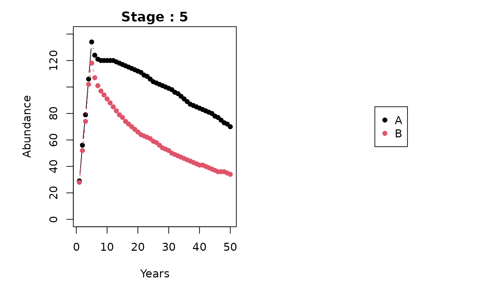
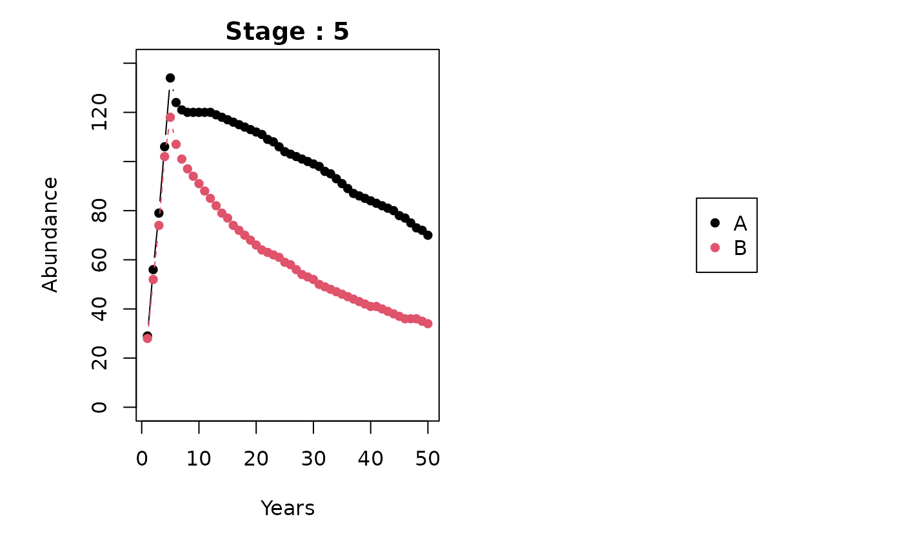

Getting started with the metapopbio package
Caleb A. Aldridge
2023-10-06
Source:vignettes/getting-started.Rmd
getting-started.Rmd
# devtools::install_github("AldridgeCaleb/meta-pop-bio")
library(metapopbio)
#> Loading required package: openxlsx
#> Loading required package: zeallotAbout
The metapopbio
package is inspired by and complements the functionalities of the popbio
package. Users can construct and analyze projection matrix models for
metapopulations classified by age or stage and located in distinct
patches.
The functionality to date is largely based on Hunter and Caswell (2005) to construct and analyze spatial matrix population models using the vec-permutation matrix. This model extends the Leslie matrix (Leslie 1945) to include dispersal rates between patches. An analogous approach was taken by Lebreton (1996) and called the “renewal equation approach.”
Current plans include support for classic metapopulation models of Gotelli (1991; 2008) and others, i.e., \(\frac{df}{dt}=p_{i}(1-f)-p_{e}f\), \(\frac{df}{dt}=p_{i}(1-f)-ef(1-f)\), \(\frac{df}{dt}=if(1-f)-p_{e}f\), and \(\frac{df}{dt}=if(1-f)-ef(1-f)\), and hyperstate matrix models (Roth and Caswell 2016). Additionally, Hanski’s (1994) incidence function \(J_{i}=\frac{1}{1+\Bigl(1+\bigl[\frac{y'}{S_{i}}\bigr]^2\Bigr)\frac{e}{A_{i}^x}}\) and a metapopulation version of the Susceptible–Infected–Recovered model (SIR model) are also being considered. Other suggestions can be submitted in email to caleb.a.aldridge@gmail.com or as an issue on the package’s GitHub repository (https://github.com/AldridgeCaleb/meta-pop-bio/issues).
Examples
The following two examples come from Hunter and Caswell (2005) using peregrine falcon (Falco peregrinus) data from Wootton and Bell (1992) and black-headed gull (Larus ridibundus) data from Lebreton (1996).
The peregrine falcon
1. Patches, stages, and grouping
First, we define the number of patches (discrete locations) and stages (age, class, or size). In this example there are two “patches”, Northern California and Southern California, and two life-stages, juvenile and adult. We also group or will project stages within patches1.
n_patches <- 2
n_stages <- 2
group_by <- "patches"2. Construct vec-permutation matrix
Next, we construct the vec-permutation matrix. Essentially, the
vec-permutation matrix helps us relate demographic and dispersal
parameters so that populations in patches are projected considering
births, immigration, deaths, and emigration (BIDE) or recruitment,
immigration, survival, and emigration (RISE). The
metapopbio::vec.perm function helps us to easily construct
a vec-permutation matrix.
(P <-
metapopbio::vec.perm(n_stages = n_stages,
n_patches = n_patches,
group_by = group_by))
#> [,1] [,2] [,3] [,4]
#> [1,] 1 0 0 0
#> [2,] 0 0 1 0
#> [3,] 0 1 0 0
#> [4,] 0 0 0 13. Demographic parameters for each patch
We now specify transition probabilities from one stage to the next (survival s and recruitment r). Numbers in object names indicate patch then stage. Only adults are assumed to reproduce.
Northern first.
# Northern
f11 <- 0.00
f12 <- 0.26
s11 <- 0.72
s12 <- 0.77Now Southern.
# Southern
f21 <- 0.00
f22 <- 0.19
s21 <- 0.72
s22 <- 0.774a. Structure demographic parameters
Now we will construct demographic (Leslise-style) matrices for each of the patches. This is just placing the demographic parameters from above into an ordered matrices for analysis and projecting.
4b. Construct block diagonal matrix
Along with the vec-permutation matrix, spatial matrix population
models use a matrix of matrices for analysis and projection of
population demographics and movement. We accomplish this using the
metapopbio::blk.diag function.
5. Structure movement parameters
Similar to the above, we will construct movement or dispersal matrices for each of the stages. This is just placing movement parameters into an ordered matrices for analysis and projecting. We assume that only juveniles disperse, therefore an identity matrix is specified for adult movement.
# Juveniles
dx1 <- 0.27
dx2 <- 1 - dx1
(Mx1 <- matrix(c(dx2, dx1, dx1, dx2),
nrow = n_patches,
ncol = n_patches,
byrow = TRUE))
#> [,1] [,2]
#> [1,] 0.73 0.27
#> [2,] 0.27 0.73
# Adults
(Mx2 <- diag(nrow = n_patches))
#> [,1] [,2]
#> [1,] 1 0
#> [2,] 0 1
# Block diagonal matrix
(MM <- metapopbio::blk.diag(list(Mx1, Mx2)))
#> [,1] [,2] [,3] [,4]
#> [1,] 0.73 0.27 0 0
#> [2,] 0.27 0.73 0 0
#> [3,] 0.00 0.00 1 0
#> [4,] 0.00 0.00 0 16. Construct projection matrix
Now we can use the vec-permutation matrix and block diagonal matrices
to construct a population projection matrix. This is accomplished
through matrix multiplication. The order of matrices is very important
(see Hunter and Caswell 2005 or function documentation for more detail),
but the metapopbio::spmm.project.matrix function makes it
much more convenient and reduces the probability of calculation errors.
All that’s needed is to specify the grouping (structure) for the
projection (stages within patches here) and the order type between
demographic and movement / dispersal processes (here, dispersal then
demographics), then supply the matrices we have constructed (P, BB, and
MM).
group_by <- "patches"
lh_order <- "move"
(A <-
metapopbio::spmm.project.matrix(
P = P,
BB = BB,
MM = MM,
group_by = group_by,
lh_order = lh_order
))
#> [,1] [,2] [,3] [,4]
#> [1,] 0.0000 0.26 0.0000 0.00
#> [2,] 0.5256 0.77 0.1944 0.00
#> [3,] 0.0000 0.00 0.0000 0.19
#> [4,] 0.1944 0.00 0.5256 0.777. Project
Now we can project populations into future time steps. First, we have to indicate the starting, initial, or current sizes of each stage by patch, or vice versa if grouping by stages. An added step is to comment on the vector which ensures projection calculations are correct. The numbers for n below were retrieved from Table 1 of Wootton and Bell (1992).
n <- c(
60, 19, # Northern patch adults then juveniles
29, 20 # Southern patch adults then juveniles
)
comment(n) <- "patches" # vector attr for group_by Now we indicate the number of time steps we would like to project.
n_timesteps <- 100And, finally we can project stages within patches using the
metapopbio::spmm.project function.
head(
projs <-
metapopbio::spmm.project(
n = n,
A = A,
n_timesteps = n_timesteps,
n_stages = n_stages,
n_patches = n_patches
)
)
#> [1] "Deterministic spatial matrix model projections for patches structured population vector and movement then demography A projection matrix."
#> 1 2 3 4 5 6 7 8
#> [1,] 60 4.9400 13.468936 11.238229 10.900330 10.270267 9.726175 9.200632
#> [2,] 19 51.8036 43.223956 41.924348 39.501028 37.408367 35.387046 33.476641
#> [3,] 29 3.8000 8.038216 6.751373 6.498775 6.093371 5.743504 5.410349
#> [4,] 20 42.3064 35.533544 34.204076 32.070372 30.228967 28.475520 26.835704
#> 9 10 11 12 13 14 15
#> [1,] 8.703927 8.232806 7.786417 7.363528 6.963014 6.583779 6.224767
#> [2,] 31.664637 29.947758 28.321261 26.780825 25.322228 23.941413 22.634479
#> [3,] 5.098784 4.806197 4.531445 4.273266 4.030542 3.802242 3.587418
#> [4,] 25.295775 23.849711 22.490872 21.213378 20.011800 18.881148 17.816829
#> 16 17 18 19 20 21 22
#> [1,] 5.884964 5.563397 5.259133 4.971280 4.698988 4.441444 4.197874
#> [2,] 21.397680 20.227434 19.120309 18.073033 17.082479 16.145670 15.259770
#> [3,] 3.385198 3.194774 3.015402 2.846392 2.687104 2.536941 2.395351
#> [4,] 16.814600 15.870539 14.981013 14.142651 13.352322 12.607113 11.904310
#> 23 24 25 26 27 28 29
#> [1,] 3.967540 3.749741 3.543810 3.349114 3.165049 2.991046 2.826563
#> [2,] 14.422082 13.630040 12.881207 12.173267 11.504025 10.871395 10.273402
#> [3,] 2.261819 2.135863 2.017034 1.904912 1.799106 1.699246 1.604990
#> [4,] 11.241382 10.615966 10.025853 9.468976 8.943401 8.447315 7.979015
#> 30 31 32 33 34 35 36 37
#> [1,] 2.671084 2.524124 2.385221 2.253936 2.129857 2.012590 1.901764 1.797028
#> [2,] 9.708171 9.173926 8.668986 8.191757 7.740730 7.314477 6.911645 6.530955
#> [3,] 1.516013 1.432013 1.352704 1.277820 1.207108 1.140333 1.077271 1.017714
#> [4,] 7.536908 7.119495 6.725366 6.353200 6.001751 5.669849 5.356390 5.060337
#> 38 39 40 41 42 43 44
#> [1,] 1.698048 1.6045112 1.516118 1.432588 1.353654 1.2790640 1.2085798
#> [2,] 6.171197 5.8312246 5.509954 5.206362 4.919477 4.6483838 4.3922152
#> [3,] 0.961464 0.9083353 0.858153 0.810752 0.765977 0.7236813 0.6837267
#> [4,] 4.780712 4.5165945 4.267116 4.031458 3.808849 3.5985615 3.3999093
#> 45 46 47 48 49 50 51
#> [1,] 1.1419760 1.0790394 1.0195688 0.9633735 0.9102736 0.8600988 0.8126882
#> [2,] 4.1501517 3.9214184 3.7052828 3.5010523 3.3080723 3.1257239 2.9534223
#> [3,] 0.6459828 0.6103265 0.5766419 0.5448193 0.5147554 0.4863527 0.4595189
#> [4,] 3.2122448 3.0349571 2.8674699 2.7092389 2.5597508 2.4185208 2.2850911
#> 52 53 54 55 56 57 58
#> [1,] 0.7678898 0.7255598 0.6855623 0.6477690 0.6120585 0.5783162 0.5464335
#> [2,] 2.7906146 2.6367782 2.4914194 2.3540713 2.2242929 2.1016673 1.9858004
#> [3,] 0.4341673 0.4102157 0.3875865 0.3662067 0.3460070 0.3269223 0.3088908
#> [4,] 2.1590299 2.0399292 1.9274036 1.8210896 1.7206435 1.6257410 1.5360756
#> 59 60 61 62 63 64 65
#> [1,] 0.5163081 0.4878432 0.4609474 0.4355341 0.4115217 0.3888330 0.3673951
#> [2,] 1.8763202 1.7728746 1.6751312 1.5827758 1.4955116 1.4130580 1.3351499
#> [3,] 0.2918544 0.2757580 0.2605498 0.2461806 0.2326041 0.2197767 0.2076568
#> [4,] 1.4513579 1.3713145 1.2956873 1.2242323 1.1567192 1.0929304 1.0326601
#> 66 67 68 69 70 71 72
#> [1,] 0.3471390 0.3279996 0.3099153 0.2928280 0.2766828 0.2614277 0.2470136
#> [2,] 1.2615367 1.1919819 1.1262616 1.0641645 1.0054910 0.9500523 0.8976701
#> [3,] 0.1962054 0.1853857 0.1751628 0.1655037 0.1563773 0.1477543 0.1396068
#> [4,] 0.9757143 0.9219094 0.8710721 0.8230386 0.7776542 0.7347728 0.6942563
#> 73 74 75 76 77 78 79
#> [1,] 0.2333942 0.2205257 0.2083667 0.1968781 0.1860229 0.1757662 0.16607498
#> [2,] 0.8481759 0.8014105 0.7572235 0.7154727 0.6760238 0.6387499 0.60353119
#> [3,] 0.1319087 0.1246351 0.1177626 0.1112691 0.1051337 0.0993366 0.09385919
#> [4,] 0.6559741 0.6198031 0.5856268 0.5533351 0.5228242 0.4939957 0.46675699
#> 80 81 82 83 84 85
#> [1,] 0.15691811 0.14826611 0.14009114 0.13236691 0.12506856 0.11817261
#> [2,] 0.57025426 0.53881207 0.50910349 0.48103292 0.45451006 0.42944958
#> [3,] 0.08868383 0.08379385 0.07917351 0.07480795 0.07068311 0.06678572
#> [4,] 0.44102025 0.41670269 0.39372605 0.37201637 0.35150379 0.33212229
#> 86 87 88 89 90 91
#> [1,] 0.11165689 0.1055004 0.09968340 0.09418711 0.08899386 0.08408696
#> [2,] 0.40577084 0.3833977 0.36225810 0.34228409 0.32341139 0.30557928
#> [3,] 0.06310324 0.0596238 0.05633623 0.05322993 0.05029491 0.04752173
#> [4,] 0.31380950 0.2965065 0.28015754 0.26471008 0.25011439 0.23632349
#> 92 93 94 95 96 97
#> [1,] 0.07945061 0.07506990 0.07093072 0.06701977 0.06332446 0.05983290
#> [2,] 0.28873038 0.27281048 0.25776836 0.24355562 0.23012653 0.21743789
#> [3,] 0.04490146 0.04242567 0.04008640 0.03787610 0.03578769 0.03381442
#> [4,] 0.22329302 0.21098103 0.19934792 0.18835624 0.17797063 0.16815767
#> 98 99 100
#> [1,] 0.05653385 0.05341671 0.05047143
#> [2,] 0.20544887 0.19412090 0.18341752
#> [3,] 0.03194996 0.03018830 0.02852377
#> [4,] 0.15888578 0.15012513 0.141847528. Plotting
stage_names <- c("Juv.", "Adults")
patch_names <- c("North", "South")
metapopbio::spmm.plot(
projections = projs,
ylabs = "Abundance",
xlabs = "Years",
stage_names = stage_names,
patch_names = patch_names
)

9. Sensitivity and elasticity analyses
metapopbio::spmm.project.matrix.sens(A)
#> [,1] [,2] [,3] [,4]
#> [1,] 0.10867018 0.3949167 0.06141440 0.3054113
#> [2,] 0.16158007 0.5871958 0.09131616 0.4541115
#> [3,] 0.08404076 0.3054113 0.04749521 0.2361917
#> [4,] 0.09131616 0.3318507 0.05160687 0.2566388
metapopbio::spmm.eig.lambda(A)
#> $eig
#> eigen() decomposition
#> $values
#> [1] 0.94486220 0.85353422 -0.17486220 -0.08353422
#>
#> $vectors
#> [,1] [,2] [,3] [,4]
#> [1,] 0.2111729 -0.1455690 -0.6997575 0.5681052
#> [2,] 0.7674202 -0.4778775 0.4706197 -0.1825239
#> [3,] 0.1193433 0.1882302 -0.3954644 -0.7345971
#> [4,] 0.5934892 0.8455839 0.3639567 0.3229684
#>
#>
#> $lambda
#> [1] 0.9448622
#>
#> $v
#> [1] 0.2111729 0.7674202 0.1193433 0.5934892
#>
#> $eig_t
#> eigen() decomposition
#> $values
#> [1] 0.94486220 0.85353422 -0.17486220 -0.08353422
#>
#> $vectors
#> [,1] [,2] [,3] [,4]
#> [1,] -0.4706197 -0.1825239 -0.7674202 -0.4778775
#> [2,] -0.6997575 -0.5681052 0.2111729 0.1455690
#> [3,] -0.3639567 0.3229684 -0.5934892 0.8455839
#> [4,] -0.3954644 0.7345971 0.1193433 -0.1882302
#>
#>
#> $w
#> [1] -0.4706197 -0.6997575 -0.3639567 -0.3954644
metapopbio::spmm.demo.sens(BB, A, P, MM)
#> [,1] [,2] [,3] [,4]
#> [1,] 0.10202024 0.16158007 0.09069071 0.09131616
#> [2,] 0.37075026 0.58719578 0.32957777 0.33185072
#> [3,] 0.05765622 0.09131616 0.05125339 0.05160687
#> [4,] 0.28672202 0.45411152 0.25488102 0.25663882
metapopbio::spmm.demo.elas(BB, A, P, MM)
#> [,1] [,2] [,3] [,4]
#> [1,] 0.0000000 0.04446238 0.0000000 0.0000000
#> [2,] 0.2825176 0.47852560 0.0000000 0.0000000
#> [3,] 0.0000000 0.00000000 0.0000000 0.0103775
#> [4,] 0.0000000 0.00000000 0.1942234 0.2091436
metapopbio::spmm.move.sens(MM, A, P, BB)
#> [,1] [,2] [,3] [,4]
#> [1,] 0.2843400 0.2198961 0.4227810 0.2389325
#> [2,] 0.2198961 0.1700581 0.3269603 0.1847800
#> [3,] 0.3323401 0.2570173 0.4941516 0.2792673
#> [4,] 0.2468354 0.1908917 0.3670159 0.2074172
metapopbio::spmm.move.elas(MM, A, P, BB)
#> [,1] [,2] [,3] [,4]
#> [1,] 0.21968095 0.06283663 0.000000 0.0000000
#> [2,] 0.06283663 0.13138675 0.000000 0.0000000
#> [3,] 0.00000000 0.00000000 0.522988 0.0000000
#> [4,] 0.00000000 0.00000000 0.000000 0.2195211The black-headed gull
Fewer comments are provided for this example but it should be noted that the grouping (structure of n) is by stages in this example. The life-cycle order remains the same, i.e., movement then demographics (only juveniles assumed to disperse).
1. Patches, stages, and grouping
First, we define the number of patches and stages (age, class, or size). In this example there are two “patches” and five life-stages. We also group or will project patches within stages.
n_patches <- 2
n_stages <- 5
group_by <- "stages"2. Construct vec-permutation matrix
Next, we construct the vec-permutation matrix.
(P <-
metapopbio::vec.perm(n_stages = n_stages,
n_patches = n_patches,
group_by = group_by))
#> [,1] [,2] [,3] [,4] [,5] [,6] [,7] [,8] [,9] [,10]
#> [1,] 1 0 0 0 0 0 0 0 0 0
#> [2,] 0 0 0 0 0 1 0 0 0 0
#> [3,] 0 1 0 0 0 0 0 0 0 0
#> [4,] 0 0 0 0 0 0 1 0 0 0
#> [5,] 0 0 1 0 0 0 0 0 0 0
#> [6,] 0 0 0 0 0 0 0 1 0 0
#> [7,] 0 0 0 1 0 0 0 0 0 0
#> [8,] 0 0 0 0 0 0 0 0 1 0
#> [9,] 0 0 0 0 1 0 0 0 0 0
#> [10,] 0 0 0 0 0 0 0 0 0 13. Define and structure Demographic parameters
We now specify transition probabilities from one stage to the next. Only adults are assumed to reproduce and differential among adult stages. We will specify demographic parameters and structure the (Leslie-style) matrices for each patch simultaneously.
B1x <- matrix(c(0.000, 0.096, 0.160, 0.224, 0.320,
0.800, 0.000, 0.000, 0.000, 0.000,
0.000, 0.820, 0.000, 0.000, 0.000,
0.000, 0.000, 0.820, 0.000, 0.000,
0.000, 0.000, 0.000, 0.820, 0.820),
nrow = n_stages, ncol = n_stages, byrow = TRUE)
B2x <- matrix(c(0.000, 0.100, 0.160, 0.200, 0.200,
0.800, 0.000, 0.000, 0.000, 0.000,
0.000, 0.820, 0.000, 0.000, 0.000,
0.000, 0.000, 0.820, 0.000, 0.000,
0.000, 0.000, 0.000, 0.820, 0.820),
nrow = n_stages, ncol = n_stages, byrow = TRUE)4. Construct block diagonal matrix
Along with the vec-permutation matrix, spatial matrix population
models use a matrix of matrices for analysis and projection of
population demographics and movement. We accomplish this using the
metapopbio::blk.diag function.
(BB <- metapopbio::blk.diag(list(B1x, B2x)))
#> [,1] [,2] [,3] [,4] [,5] [,6] [,7] [,8] [,9] [,10]
#> [1,] 0.0 0.096 0.16 0.224 0.32 0.0 0.00 0.00 0.00 0.00
#> [2,] 0.8 0.000 0.00 0.000 0.00 0.0 0.00 0.00 0.00 0.00
#> [3,] 0.0 0.820 0.00 0.000 0.00 0.0 0.00 0.00 0.00 0.00
#> [4,] 0.0 0.000 0.82 0.000 0.00 0.0 0.00 0.00 0.00 0.00
#> [5,] 0.0 0.000 0.00 0.820 0.82 0.0 0.00 0.00 0.00 0.00
#> [6,] 0.0 0.000 0.00 0.000 0.00 0.0 0.10 0.16 0.20 0.20
#> [7,] 0.0 0.000 0.00 0.000 0.00 0.8 0.00 0.00 0.00 0.00
#> [8,] 0.0 0.000 0.00 0.000 0.00 0.0 0.82 0.00 0.00 0.00
#> [9,] 0.0 0.000 0.00 0.000 0.00 0.0 0.00 0.82 0.00 0.00
#> [10,] 0.0 0.000 0.00 0.000 0.00 0.0 0.00 0.00 0.82 0.825. Structure movement parameters
Similar to the above, we will construct movement or dispersal matrices for each of the stages. This is just placing movement parameters into an ordered matrices for analysis and projecting. We assume that only juveniles disperse, therefore an identity matrix is specified for adult movement.
# Juveniles
Mx1 <- matrix(c(0.75, 0.375, 0.25, 0.625),
nrow = n_patches, ncol = n_patches, byrow = TRUE)
# Adults
Mx5 <- Mx4 <- Mx3 <- Mx2 <-
diag(nrow = n_patches)
# Block diagonal matrix
(MM <- metapopbio::blk.diag(list(Mx1, Mx2, Mx3, Mx4, Mx5)))
#> [,1] [,2] [,3] [,4] [,5] [,6] [,7] [,8] [,9] [,10]
#> [1,] 0.75 0.375 0 0 0 0 0 0 0 0
#> [2,] 0.25 0.625 0 0 0 0 0 0 0 0
#> [3,] 0.00 0.000 1 0 0 0 0 0 0 0
#> [4,] 0.00 0.000 0 1 0 0 0 0 0 0
#> [5,] 0.00 0.000 0 0 1 0 0 0 0 0
#> [6,] 0.00 0.000 0 0 0 1 0 0 0 0
#> [7,] 0.00 0.000 0 0 0 0 1 0 0 0
#> [8,] 0.00 0.000 0 0 0 0 0 1 0 0
#> [9,] 0.00 0.000 0 0 0 0 0 0 1 0
#> [10,] 0.00 0.000 0 0 0 0 0 0 0 16. Construct projection matrix
Now we can use the vec-permutation matrix and block diagonal matrices
to construct a population projection matrix. This is accomplished
through matrix multiplication. The order of matrices is very important
(see Hunter and Caswell 2005 or function documentation for more detail),
but the metapopbio::spmm.project.matrix function makes it
much more convenient and reduces the probability of calculation errors.
All that’s needed is to specify the grouping (structure) for the
projection (stages within patches here) and the order type between
demographic and movement / dispersal processes (here, dispersal then
demographics), then supply the matrices we have constructed (P, BB, and
MM).
group_by <- "stages"
lh_order <- "move"
(A <-
metapopbio::spmm.project.matrix(
P = P,
BB = BB,
MM = MM,
group_by = group_by,
lh_order = lh_order
))
#> [,1] [,2] [,3] [,4] [,5] [,6] [,7] [,8] [,9] [,10]
#> [1,] 0.0 0.0 0.096 0.00 0.16 0.00 0.224 0.00 0.32 0.00
#> [2,] 0.0 0.0 0.000 0.10 0.00 0.16 0.000 0.20 0.00 0.20
#> [3,] 0.6 0.3 0.000 0.00 0.00 0.00 0.000 0.00 0.00 0.00
#> [4,] 0.2 0.5 0.000 0.00 0.00 0.00 0.000 0.00 0.00 0.00
#> [5,] 0.0 0.0 0.820 0.00 0.00 0.00 0.000 0.00 0.00 0.00
#> [6,] 0.0 0.0 0.000 0.82 0.00 0.00 0.000 0.00 0.00 0.00
#> [7,] 0.0 0.0 0.000 0.00 0.82 0.00 0.000 0.00 0.00 0.00
#> [8,] 0.0 0.0 0.000 0.00 0.00 0.82 0.000 0.00 0.00 0.00
#> [9,] 0.0 0.0 0.000 0.00 0.00 0.00 0.820 0.00 0.82 0.00
#> [10,] 0.0 0.0 0.000 0.00 0.00 0.00 0.000 0.82 0.00 0.827. Project
Now we can project populations into future time steps. First, we have to indicate the starting, initial, or current sizes of each patch by stage. I have made these up as they were not avilable in Hunter and Morris (2005) nor Lebreton (1996). An added step is to comment on the vector which ensures projection calculations are correct.
n <- c(
100, 90, # stage 1
78, 77, # stage 2
50, 48, # stage 3
40, 36, # stage 4
29, 28 # stage 5
)
comment(n) <- "stages" # vector attr for group_by Now we indicate the number of time steps we would like to project.
n_timesteps <- 50And, finally we can project stages within patches using the
metapopbio::spmm.project function.
head(
projs <-
metapopbio::spmm.project(
n = n,
A = A,
n_timesteps = n_timesteps,
n_stages = n_stages,
n_patches = n_patches
)
)
#> [1] "Deterministic spatial matrix model projections for stages structured population vector and movement then demography A projection matrix."
#> 1 2 3 4 5 6 7 8 9
#> [1,] 100 33.728 45.8752 51.52188 55.27576 57.16619 56.41182 56.61106 57.01488
#> [2,] 90 28.180 34.9704 36.02828 34.98257 33.38963 32.34447 31.50141 30.72830
#> [3,] 78 87.000 28.6908 38.01624 41.72161 43.66023 44.31660 43.55043 43.41706
#> [4,] 77 65.000 20.8356 26.66024 28.31852 28.54643 28.12805 27.45460 27.07292
#> [5,] 50 63.960 71.3400 23.52646 31.17332 34.21172 35.80139 36.33961 35.71136
#> [6,] 48 63.140 53.3000 17.08519 21.86140 23.22118 23.40808 23.06500 22.51277
#> 10 11 12 13 14 15 16 17
#> [1,] 57.42386 57.75500 57.98370 58.16642 58.31441 58.43059 58.51630 58.57352
#> [2,] 30.01180 29.35679 28.76673 28.23493 27.75363 27.31674 26.91939 26.55750
#> [3,] 43.42742 43.45786 43.46004 43.42024 43.37033 43.31474 43.25337 43.18560
#> [4,] 26.76713 26.49067 26.22939 25.98011 25.75075 25.53970 25.34449 25.16296
#> [5,] 35.60199 35.61048 35.63544 35.63723 35.60459 35.56367 35.51808 35.46777
#> [6,] 22.19979 21.94904 21.72235 21.50810 21.30369 21.11561 20.94255 20.78248
#> 18 19 20 21 22 23 24 25
#> [1,] 58.60568 58.61578 58.60635 58.57953 58.53724 58.48118 58.41291 58.33379
#> [2,] 26.22731 25.92542 25.64878 25.39469 25.16071 24.94470 24.74475 24.55913
#> [3,] 43.11136 43.03160 42.94709 42.85844 42.76613 42.67056 42.57212 42.47117
#> [4,] 24.99345 24.83479 24.68587 24.54566 24.41325 24.28780 24.16859 24.05496
#> [5,] 35.41219 35.35132 35.28591 35.21662 35.14392 35.06822 34.98986 34.90914
#> [6,] 20.63362 20.49463 20.36453 20.24241 20.12744 20.01886 19.91600 19.81824
#> 26 27 28 29 30 31 32 33
#> [1,] 58.24506 58.14781 58.04301 57.93152 57.81413 57.69152 57.56431 57.43305
#> [2,] 24.38632 24.22496 24.07383 23.93184 23.79803 23.67153 23.55158 23.43748
#> [3,] 42.36802 42.26294 42.15617 42.04795 41.93846 41.82788 41.71637 41.60406
#> [4,] 23.94633 23.84217 23.74204 23.64551 23.55222 23.46184 23.37407 23.28865
#> [5,] 34.82636 34.74177 34.65561 34.56806 34.47932 34.38954 34.29886 34.20742
#> [6,] 19.72506 19.63599 19.55058 19.46847 19.38932 19.31282 19.23871 19.16674
#> 34 35 36 37 38 39 40 41
#> [1,] 57.29823 57.16028 57.01960 56.87653 56.73138 56.58443 56.43592 56.28607
#> [2,] 23.32863 23.22449 23.12455 23.02839 22.93562 22.84590 22.75891 22.67437
#> [3,] 41.49107 41.37753 41.26351 41.14913 41.03444 40.91952 40.80443 40.68922
#> [4,] 23.20535 23.12396 23.04430 22.96619 22.88950 22.81409 22.73983 22.66664
#> [5,] 34.11533 34.02268 33.92957 33.83608 33.74228 33.64824 33.55400 33.45963
#> [6,] 19.09669 19.02839 18.96165 18.89633 18.83228 18.76939 18.70755 18.64666
#> 42 43 44 45 46 47 48 49
#> [1,] 56.13508 55.98312 55.83035 55.67690 55.52290 55.36846 55.21367 55.05862
#> [2,] 22.59206 22.51174 22.43322 22.35632 22.28089 22.20680 22.13391 22.06211
#> [3,] 40.57396 40.45867 40.34340 40.22818 40.11304 39.99801 39.88311 39.76837
#> [4,] 22.59440 22.52305 22.45249 22.38268 22.31354 22.24503 22.17709 22.10969
#> [5,] 33.36516 33.27064 33.17611 33.08158 32.98710 32.89269 32.79837 32.70415
#> [6,] 18.58664 18.52741 18.46890 18.41104 18.35380 18.29710 18.24092 18.18521
#> 50
#> [1,] 54.90340
#> [2,] 21.99132
#> [3,] 39.65381
#> [4,] 22.04278
#> [5,] 32.61007
#> [6,] 18.129948. Plotting
stage_names <- as.character(1:5)
patch_names <- c("A", "B")
metapopbio::spmm.plot(
projections = projs,
ylabs = "Abundance",
xlabs = "Years",
stage_names = stage_names,
patch_names = patch_names
) 

9. Sensitivity and elasticity analyses
metapopbio::spmm.project.matrix.sens(A)
#> [,1] [,2] [,3] [,4] [,5]
#> [1,] 0.09755745+0i 0.03894678+0i 0.07042373+0i 0.03909882+0i 0.05791623+0i
#> [2,] 0.08124494+0i 0.03243452+0i 0.05864823+0i 0.03256113+0i 0.04823210+0i
#> [3,] 0.13514559+0i 0.05395267+0i 0.09755745+0i 0.05416329+0i 0.08023091+0i
#> [4,] 0.08092901+0i 0.03230839+0i 0.05842017+0i 0.03243452+0i 0.04804455+0i
#> [5,] 0.15291005+0i 0.06104458+0i 0.11038107+0i 0.06128289+0i 0.09077701+0i
#> [6,] 0.08849839+0i 0.03533023+0i 0.06388427+0i 0.03546815+0i 0.05253820+0i
#> [7,] 0.16689665+0i 0.06662830+0i 0.12047757+0i 0.06688840+0i 0.09908034+0i
#> [8,] 0.09175768+0i 0.03663140+0i 0.06623705+0i 0.03677440+0i 0.05447313+0i
#> [9,] 0.17628954+0i 0.07037812+0i 0.12725801+0i 0.07065286+0i 0.10465655+0i
#> [10,] 0.09175768+0i 0.03663140+0i 0.06623705+0i 0.03677440+0i 0.05447313+0i
#> [,6] [,7] [,8] [,9] [,10]
#> [1,] 0.03215474+0i 0.04763011+0i 0.02644394+0i 0.2205523+0i 0.1224493+0i
#> [2,] 0.02677817+0i 0.03966592+0i 0.02202227+0i 0.1836739+0i 0.1019746+0i
#> [3,] 0.04454371+0i 0.06598163+0i 0.03663259+0i 0.3055294+0i 0.1696280+0i
#> [4,] 0.02667404+0i 0.03951167+0i 0.02193664+0i 0.1829597+0i 0.1015781+0i
#> [5,] 0.05039884+0i 0.07465471+0i 0.04144783+0i 0.3456903+0i 0.1919251+0i
#> [6,] 0.02916889+0i 0.04320724+0i 0.02398839+0i 0.2000721+0i 0.1110788+0i
#> [7,] 0.05500879+0i 0.08148333+0i 0.04523904+0i 0.3773104+0i 0.2094804+0i
#> [8,] 0.03024314+0i 0.04479851+0i 0.02487186+0i 0.2074405+0i 0.1151697+0i
#> [9,] 0.05810467+0i 0.08606919+0i 0.04778508+0i 0.3985453+0i 0.2212699+0i
#> [10,] 0.03024314+0i 0.04479851+0i 0.02487186+0i 0.2074405+0i 0.1151697+0i
metapopbio::spmm.eig.lambda(A)
#> $eig
#> eigen() decomposition
#> $values
#> [1] 9.970859e-01+0.000000e+00i 8.919222e-01+0.000000e+00i
#> [3] 2.182849e-01+4.025870e-01i 2.182849e-01-4.025870e-01i
#> [5] -3.024940e-01+2.461757e-01i -3.024940e-01-2.461757e-01i
#> [7] 6.112978e-02+2.358721e-01i 6.112978e-02-2.358721e-01i
#> [9] -2.028494e-01+0.000000e+00i -2.481725e-15+0.000000e+00i
#>
#> $vectors
#> [,1] [,2] [,3]
#> [1,] -0.32790653+0i -0.18212972+0i 0.11605642-0.07487059i
#> [2,] -0.13090649+0i 0.22690373+0i 0.00607663+0.01670070i
#> [3,] -0.23670566+0i -0.04619989+0i -0.00224182-0.17870968i
#> [4,] -0.13141752+0i 0.08635946+0i 0.01460604-0.05728283i
#> [5,] -0.19466592+0i -0.04247446+0i -0.28321501-0.14899452i
#> [6,] -0.10807732+0i 0.07939566+0i -0.07770140-0.07188011i
#> [7,] -0.16009259+0i -0.03904943+0i -0.47624334+0.31863815i
#> [8,] -0.08888242+0i 0.07299341+0i -0.17946017+0.06096001i
#> [9,] -0.74131229+0i -0.44521053+0i 0.64901068+0.00000000i
#> [10,] -0.41157200+0i 0.83221273+0i 0.20733303+0.05564490i
#> [,4] [,5] [,6]
#> [1,] 0.11605642+0.07487059i 0.05022988+0.092774312i 0.05022988-0.092774312i
#> [2,] 0.00607663-0.01670070i -0.00445866-0.000487239i -0.00445866+0.000487239i
#> [3,] -0.00224182+0.17870968i 0.03257850-0.157022550i 0.03257850+0.157022550i
#> [4,] 0.01460604+0.05728283i 0.01409087-0.049066797i 0.01409087+0.049066797i
#> [5,] -0.28321501+0.14899452i -0.26151751+0.212828160i -0.26151751-0.212828160i
#> [6,] -0.07770140+0.07188011i -0.08809695+0.061315092i -0.08809695-0.061315092i
#> [7,] -0.47624334-0.31863815i 0.70892098+0.000000000i 0.70892098+0.000000000i
#> [8,] -0.17946017-0.06096001i 0.22503737+0.016927103i 0.22503737-0.016927103i
#> [9,] 0.64901068+0.00000000i -0.49411266-0.108364506i -0.49411266+0.108364506i
#> [10,] 0.20733303-0.05564490i -0.15426192-0.046196910i -0.15426192+0.046196910i
#> [,7] [,8] [,9]
#> [1,] 0.014698188+0.01044128i 0.014698188-0.01044128i 0.010988584+0i
#> [2,] -0.031370628-0.01839136i -0.031370628+0.01839136i -0.023369498+0i
#> [3,] 0.002359263+0.00312244i 0.002359263-0.00312244i 0.002059156+0i
#> [4,] -0.041358939+0.04331760i -0.041358939-0.04331760i 0.046768853+0i
#> [5,] 0.012163687-0.00504948i 0.012163687+0.00504948i -0.008323952+0i
#> [6,] 0.106195671+0.17130489i 0.106195671-0.17130489i -0.189058814+0i
#> [7,] -0.006180033-0.04388822i -0.006180033+0.04388822i 0.033648815+0i
#> [8,] 0.647709984-0.20132129i 0.647709984+0.20132129i 0.764252980+0i
#> [9,] -0.007352067+0.04513841i -0.007352067-0.04513841i -0.026975652+0i
#> [10,] -0.699885399+0.00000000i -0.699885399+0.00000000i -0.612687917+0i
#> [,10]
#> [1,] -2.152632e-16+0i
#> [2,] 5.083145e-17+0i
#> [3,] 8.319549e-17+0i
#> [4,] -1.860247e-16+0i
#> [5,] -3.341436e-16+0i
#> [6,] 1.981519e-15+0i
#> [7,] -1.381459e-15+0i
#> [8,] -7.071068e-01+0i
#> [9,] 1.464485e-15+0i
#> [10,] 7.071068e-01+0i
#>
#>
#> $lambda
#> [1] 0.9970859
#>
#> $v
#> [1] -0.32790653+0i -0.13090649+0i -0.23670566+0i -0.13141752+0i -0.19466592+0i
#> [6] -0.10807732+0i -0.16009259+0i -0.08888242+0i -0.74131229+0i -0.41157200+0i
#>
#> $eig_t
#> eigen() decomposition
#> $values
#> [1] 9.970859e-01+0.000000e+00i 8.919222e-01+0.000000e+00i
#> [3] 2.182849e-01+4.025870e-01i 2.182849e-01-4.025870e-01i
#> [5] -3.024940e-01+2.461757e-01i -3.024940e-01-2.461757e-01i
#> [7] 6.112978e-02+2.358721e-01i 6.112978e-02-2.358721e-01i
#> [9] -2.028494e-01+0.000000e+00i -1.560002e-16+0.000000e+00i
#>
#> $vectors
#> [,1] [,2] [,3]
#> [1,] 0.2536597+0i 0.05633004+0i -0.62139103+0.00000000i
#> [2,] 0.2112455+0i -0.15794294+0i -0.29776448-0.07991527i
#> [3,] 0.3513929+0i 0.22206487+0i -0.25523002-0.40674126i
#> [4,] 0.2104240+0i -0.41498457+0i 0.08748875-0.03059607i
#> [5,] 0.3975824+0i 0.23494746+0i 0.20449932-0.23358264i
#> [6,] 0.2301052+0i -0.43212154+0i 0.07462378+0.04455451i
#> [7,] 0.4339490+0i 0.24456348+0i 0.29036465+0.03822100i
#> [8,] 0.2385797+0i -0.43920480+0i 0.05609084+0.06409096i
#> [9,] 0.4583715+0i 0.25062643+0i 0.22827625+0.15273184i
#> [10,] 0.2385797+0i -0.43920480+0i 0.05609084+0.06409096i
#> [,4] [,5] [,6]
#> [1,] -0.62139103+0.00000000i -0.73133636+0.00000000i -0.73133636+0.00000000i
#> [2,] -0.29776448+0.07991527i -0.34822924-0.02619348i -0.34822924+0.02619348i
#> [3,] -0.25523002+0.40674126i 0.36773061-0.31024237i 0.36773061+0.31024237i
#> [4,] 0.08748875+0.03059607i 0.00293255+0.03054104i 0.00293255-0.03054104i
#> [5,] 0.20449932+0.23358264i 0.04310500+0.22484486i 0.04310500-0.22484486i
#> [6,] 0.07462378-0.04455451i 0.03221632-0.00719172i 0.03221632+0.00719172i
#> [7,] 0.29036465-0.03822100i 0.05929693-0.07000344i 0.05929693+0.07000344i
#> [8,] 0.05609084-0.06409096i 0.05822178+0.01743571i 0.05822178-0.01743571i
#> [9,] 0.22827625-0.15273184i 0.19892137+0.04362571i 0.19892137-0.04362571i
#> [10,] 0.05609084-0.06409096i 0.05822178+0.01743571i 0.05822178-0.01743571i
#> [,7] [,8] [,9]
#> [1,] 0.00548865-0.03369784i 0.00548865+0.03369784i -0.025230343+0i
#> [2,] 0.78374361+0.00000000i 0.78374361+0.00000000i -0.859571041+0i
#> [3,] -0.02266694-0.15564715i -0.02266694+0.15564715i -0.134640449+0i
#> [4,] 0.10942031+0.46311484i 0.10942031-0.46311484i 0.429511140+0i
#> [5,] 0.04243938-0.01417827i 0.04243938+0.01417827i 0.036260783+0i
#> [6,] -0.22063586+0.06599916i -0.22063586-0.06599916i -0.001425556+0i
#> [7,] 0.00617120+0.01772586i 0.00617120-0.01772586i -0.004047100+0i
#> [8,] -0.18835824-0.05854553i -0.18835824+0.05854553i 0.168073829+0i
#> [9,] -0.00613811+0.01230184i -0.00613811-0.01230184i 0.007893352+0i
#> [10,] -0.18835824-0.05854553i -0.18835824+0.05854553i 0.168073829+0i
#> [,10]
#> [1,] -1.095150e-16+0i
#> [2,] -9.481194e-01+0i
#> [3,] -1.888905e-16+0i
#> [4,] 2.562543e-16+0i
#> [5,] 2.341254e-16+0i
#> [6,] 1.156243e-01+0i
#> [7,] -5.441816e-16+0i
#> [8,] 1.849989e-01+0i
#> [9,] 2.425013e-16+0i
#> [10,] 2.312486e-01+0i
#>
#>
#> $w
#> [1] 0.2536597+0i 0.2112455+0i 0.3513929+0i 0.2104240+0i 0.3975824+0i
#> [6] 0.2301052+0i 0.4339490+0i 0.2385797+0i 0.4583715+0i 0.2385797+0i
metapopbio::spmm.demo.sens(BB, A, P, MM)
#> [,1] [,2] [,3] [,4] [,5]
#> [1,] 0.10635498+0i 0.08124494+0i 0.13514559+0i 0.08092901+0i 0.15291005+0i
#> [2,] 0.04245892+0i 0.03243452+0i 0.05395267+0i 0.03230839+0i 0.06104458+0i
#> [3,] 0.07677440+0i 0.05864823+0i 0.09755745+0i 0.05842017+0i 0.11038107+0i
#> [4,] 0.04262467+0i 0.03256113+0i 0.05416329+0i 0.03243452+0i 0.06128289+0i
#> [5,] 0.06313900+0i 0.04823210+0i 0.08023091+0i 0.04804455+0i 0.09077701+0i
#> [6,] 0.03505438+0i 0.02677817+0i 0.04454371+0i 0.02667404+0i 0.05039884+0i
#> [7,] 0.05192530+0i 0.03966592+0i 0.06598163+0i 0.03951167+0i 0.07465471+0i
#> [8,] 0.02882861+0i 0.02202227+0i 0.03663259+0i 0.02193664+0i 0.04144783+0i
#> [9,] 0.24044125+0i 0.18367391+0i 0.30552940+0i 0.18295967+0i 0.34569027+0i
#> [10,] 0.13349150+0i 0.10197462+0i 0.16962803+0i 0.10157808+0i 0.19192510+0i
#> [,6] [,7] [,8] [,9] [,10]
#> [1,] 0.07970085+0i 0.16689665+0i 0.09175768+0i 0.17628954+0i 0.09175768+0i
#> [2,] 0.03181809+0i 0.06662830+0i 0.03663140+0i 0.07037812+0i 0.03663140+0i
#> [3,] 0.05753360+0i 0.12047757+0i 0.06623705+0i 0.12725801+0i 0.06623705+0i
#> [4,] 0.03194230+0i 0.06688840+0i 0.03677440+0i 0.07065286+0i 0.03677440+0i
#> [5,] 0.04731544+0i 0.09908034+0i 0.05447313+0i 0.10465655+0i 0.05447313+0i
#> [6,] 0.02626924+0i 0.05500879+0i 0.03024314+0i 0.05810467+0i 0.03024314+0i
#> [7,] 0.03891205+0i 0.08148333+0i 0.04479851+0i 0.08606919+0i 0.04479851+0i
#> [8,] 0.02160373+0i 0.04523904+0i 0.02487186+0i 0.04778508+0i 0.02487186+0i
#> [9,] 0.18018313+0i 0.37731038+0i 0.20744051+0i 0.39854528+0i 0.20744051+0i
#> [10,] 0.10003656+0i 0.20948039+0i 0.11516969+0i 0.22126988+0i 0.11516969+0i
metapopbio::spmm.demo.elas(BB, A, P, MM)
#> [,1] [,2] [,3] [,4] [,5]
#> [1,] 0.00000000+0i 0.00782231+0i 0.02168649+0i 0.01818108+0i 0.04907422+0i
#> [2,] 0.03406641+0i 0.00000000+0i 0.00000000+0i 0.00000000+0i 0.00000000+0i
#> [3,] 0.00000000+0i 0.04823210+0i 0.00000000+0i 0.00000000+0i 0.00000000+0i
#> [4,] 0.00000000+0i 0.00000000+0i 0.04454371+0i 0.00000000+0i 0.00000000+0i
#> [5,] 0.00000000+0i 0.00000000+0i 0.00000000+0i 0.03951167+0i 0.07465471+0i
#> [6,] 0.00000000+0i 0.00000000+0i 0.00000000+0i 0.00000000+0i 0.00000000+0i
#> [7,] 0.00000000+0i 0.00000000+0i 0.00000000+0i 0.00000000+0i 0.00000000+0i
#> [8,] 0.00000000+0i 0.00000000+0i 0.00000000+0i 0.00000000+0i 0.00000000+0i
#> [9,] 0.00000000+0i 0.00000000+0i 0.00000000+0i 0.00000000+0i 0.00000000+0i
#> [10,] 0.00000000+0i 0.00000000+0i 0.00000000+0i 0.00000000+0i 0.00000000+0i
#> [,6] [,7] [,8] [,9] [,10]
#> [1,] 0.00000000+0i 0.000000000+0i 0.000000000+0i 0.0000000+0i 0.000000000+0i
#> [2,] 0.00000000+0i 0.000000000+0i 0.000000000+0i 0.0000000+0i 0.000000000+0i
#> [3,] 0.00000000+0i 0.000000000+0i 0.000000000+0i 0.0000000+0i 0.000000000+0i
#> [4,] 0.00000000+0i 0.000000000+0i 0.000000000+0i 0.0000000+0i 0.000000000+0i
#> [5,] 0.00000000+0i 0.000000000+0i 0.000000000+0i 0.0000000+0i 0.000000000+0i
#> [6,] 0.00000000+0i 0.005516956+0i 0.004853045+0i 0.0116549+0i 0.006066307+0i
#> [7,] 0.03122062+0i 0.000000000+0i 0.000000000+0i 0.0000000+0i 0.000000000+0i
#> [8,] 0.00000000+0i 0.037204434+0i 0.000000000+0i 0.0000000+0i 0.000000000+0i
#> [9,] 0.00000000+0i 0.000000000+0i 0.170598367+0i 0.0000000+0i 0.000000000+0i
#> [10,] 0.00000000+0i 0.000000000+0i 0.000000000+0i 0.1819716+0i 0.094715159+0i
metapopbio::spmm.move.sens(MM, A, P, BB)
#> [,1] [,2] [,3] [,4] [,5]
#> [1,] 0.03115742+0i 0.02826418+0i 0.02594761+0i 0.05330264+0i 0.04316214+0i
#> [2,] 0.03810409+0i 0.03456579+0i 0.03173273+0i 0.06518667+0i 0.05278530+0i
#> [3,] 0.06711297+0i 0.06088095+0i 0.05589106+0i 0.11481368+0i 0.09297109+0i
#> [4,] 0.02489951+0i 0.02258737+0i 0.02073608+0i 0.04259689+0i 0.03449310+0i
#> [5,] 0.04767022+0i 0.04324363+0i 0.03969932+0i 0.08155195+0i 0.06603719+0i
#> [6,] 0.18599764+0i 0.16872613+0i 0.15489711+0i 0.31819592+0i 0.25766110+0i
#> [7,] 0.06934418+0i 0.06290497+0i 0.05774919+0i 0.11863073+0i 0.09606196+0i
#> [8,] 0.10683935+0i 0.09691838+0i 0.08897482+0i 0.18277568+0i 0.14800373+0i
#> [9,] 0.07870970+0i 0.07140081+0i 0.06554871+0i 0.13465281+0i 0.10903594+0i
#> [10,] 0.10683935+0i 0.09691838+0i 0.08897482+0i 0.18277568+0i 0.14800373+0i
#> [,6] [,7] [,8] [,9] [,10]
#> [1,] 0.02930512+0i 0.02584671+0i 0.05630249+0i 0.04883567+0i 0.02930512+0i
#> [2,] 0.03583881+0i 0.03160934+0i 0.06885535+0i 0.05972376+0i 0.03583881+0i
#> [3,] 0.06312312+0i 0.05567372+0i 0.12127536+0i 0.10519184+0i 0.06312312+0i
#> [4,] 0.02341924+0i 0.02065544+0i 0.04499423+0i 0.03902711+0i 0.02341924+0i
#> [5,] 0.04483624+0i 0.03954495+0i 0.08614167+0i 0.07471758+0i 0.04483624+0i
#> [6,] 0.17494012+0i 0.15429477+0i 0.33610388+0i 0.29152984+0i 0.17494012+0i
#> [7,] 0.06522169+0i 0.05752463+0i 0.12530723+0i 0.10868900+0i 0.06522169+0i
#> [8,] 0.10048777+0i 0.08862883+0i 0.19306223+0i 0.16745835+0i 0.10048777+0i
#> [9,] 0.07403042+0i 0.06529381+0i 0.14223102+0i 0.12336837+0i 0.07403042+0i
#> [10,] 0.10048777+0i 0.08862883+0i 0.19306223+0i 0.16745835+0i 0.10048777+0i
metapopbio::spmm.move.elas(MM, A, P, BB)
#> [,1] [,2] [,3] [,4] [,5]
#> [1,] 0.023436364+0i 0.01063005+0i 0.00000000+0i 0.00000000+0i 0.0000000+0i
#> [2,] 0.009553864+0i 0.02166676+0i 0.00000000+0i 0.00000000+0i 0.0000000+0i
#> [3,] 0.000000000+0i 0.00000000+0i 0.05605441+0i 0.00000000+0i 0.0000000+0i
#> [4,] 0.000000000+0i 0.00000000+0i 0.00000000+0i 0.04272139+0i 0.0000000+0i
#> [5,] 0.000000000+0i 0.00000000+0i 0.00000000+0i 0.00000000+0i 0.0662302+0i
#> [6,] 0.000000000+0i 0.00000000+0i 0.00000000+0i 0.00000000+0i 0.0000000+0i
#> [7,] 0.000000000+0i 0.00000000+0i 0.00000000+0i 0.00000000+0i 0.0000000+0i
#> [8,] 0.000000000+0i 0.00000000+0i 0.00000000+0i 0.00000000+0i 0.0000000+0i
#> [9,] 0.000000000+0i 0.00000000+0i 0.00000000+0i 0.00000000+0i 0.0000000+0i
#> [10,] 0.000000000+0i 0.00000000+0i 0.00000000+0i 0.00000000+0i 0.0000000+0i
#> [,6] [,7] [,8] [,9] [,10]
#> [1,] 0.0000000+0i 0.00000000+0i 0.0000000+0i 0.0000000+0i 0.0000000+0i
#> [2,] 0.0000000+0i 0.00000000+0i 0.0000000+0i 0.0000000+0i 0.0000000+0i
#> [3,] 0.0000000+0i 0.00000000+0i 0.0000000+0i 0.0000000+0i 0.0000000+0i
#> [4,] 0.0000000+0i 0.00000000+0i 0.0000000+0i 0.0000000+0i 0.0000000+0i
#> [5,] 0.0000000+0i 0.00000000+0i 0.0000000+0i 0.0000000+0i 0.0000000+0i
#> [6,] 0.1754514+0i 0.00000000+0i 0.0000000+0i 0.0000000+0i 0.0000000+0i
#> [7,] 0.0000000+0i 0.05769275+0i 0.0000000+0i 0.0000000+0i 0.0000000+0i
#> [8,] 0.0000000+0i 0.00000000+0i 0.1936265+0i 0.0000000+0i 0.0000000+0i
#> [9,] 0.0000000+0i 0.00000000+0i 0.0000000+0i 0.1237289+0i 0.0000000+0i
#> [10,] 0.0000000+0i 0.00000000+0i 0.0000000+0i 0.0000000+0i 0.1007815+0iReferences
Caswell, H. (2001). Matrix Population Models: Construction, analysis, and interpretation (2nd ed.). Sinauer Associates.
Gotelli, N. J. (1991). Metapopulation models: the rescue effect, the propagate rain, and the core-satellite hypothesis. The American Naturalist 138(3):768–776.
Gotelli, N. J. (2008). A Primer of Ecology (4th ed.). Sinauer Associates.
Hunter, C. M. and Caswell, H. (2005). The use of vec-permutation matrix in spatial matrix population models. Ecological Modelling 188:15–21.
Lebreton, J. D. (1996). Demographic models for subdivided populations: the renewal equation approach. Theoretical Population Biology 49:291–313.
Leslie, P. H. (1945). On the use of matrices in certain population mathematics. Biometrika 33:183–212.
Morris, W. F., and Doak, D. F. (2003). Quantitative Conservation Biology: Theory and practice of population viability analysis. Sinauer Associates.
Roth, G. and Caswell, H. (2016). Hyperstate matrix models: extending demographic state spaces to higher dimensions. Methods in Ecology and Evolution 7:1438–1450.
Wootton, J.T., and Bell, D.A. (1992). A metapopulation model of the peregrine falcon in California: viability and management strategies. Ecological Applications 2:307-–321.